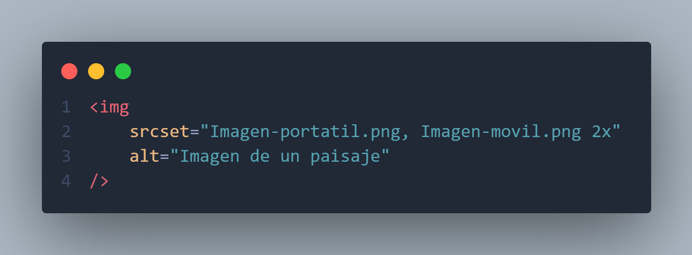

Este atributo nos va a permitir poner varias opciones dentro del atributo srcset para que dependiendo del device pixel radio cargue una u otra imagen, con esto nos ahorramos almacenamiento y velocidad de carga de la pagina ya que si la pantalla es mas pequeña no tendria sentido cargar una imagen grande, ademas que dependiendo del device pixel radio la imagen podra ajustarse al tamaño de pantalla y asi poder cargar mas rapido la pagina.
En el atributo srcset despues de la ruta deberemos especificar la
condicion para que el navegador dependiendo el device pixel radio
cargue la imagen que se acomode a ese al device pixel radio que
tenga la pantalla.Ademas cada opcion ira separado por coma.
